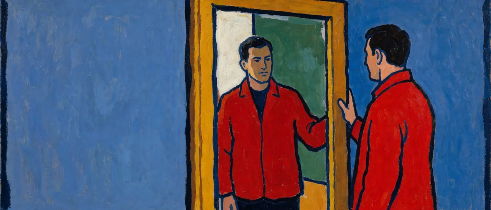

<인지공리05_3>의 영성 전통들은 도달의 서사에서 갈라졌다. 이 글이 다루는 이론들은 반대편에 선다. 실체도 도달도 두지 않고 관측 가능한 기능만 기술한다. 거버너 개념과 가장 가까운 쪽이며.. 그래서 갈라지는 지점을 더 정밀하게 짚어야 한다. 기준은 둘째이다. 시공 좌표와 자타 경계를 세계의 사실로 전제하는가.. 생존을 위한 설정으로 보는가.
1. 안토니오 다마지오 - 3층 자아 이론
원자기(proto-self).. 핵심자기(core self).. 자서전적 자기(autobiographical self)로 구분한다. 층위 구조는 화신-핸들러-거버너와 해부학적으로 대응한다. 신경과학적 손상 사례라는 관측 가능한 결과로 각 층위를 입증하므로 퍼스의 격률을 통과한다. 통과 범위는 핵심자기와 자서전적 자기까지이다. 자서전적 자기는 시간 서사를 쌓는 핸들러 층위에 해당하고.. 그 서사를 설정째로 다시 보는 거버너 층위는 다마지오의 구도에 없다.
2. 토마스 메칭거 - 자기모델 이론과 현상적 지향성 관계 모델(PMIR)
메칭거는 자아를 실체가 아니라 뇌가 구성하는 투명한 자기모델로 본다. 이 모델은 그 자체가 모델임을 인식하지 못하는 한.. "나"로 체험된다. 자기모델이 모델로 보이지 않는 상태가 핸들러이고.. 모델이 모델로 보이는 순간이 거버너의 작동이다. 메칭거가 제시한 PMIR은 마이클 그라지아노의 주의 도식 이론이 다루는 것과 사실상 같은 기제로 지적된다.
메칭거는 자기모델 프레임으로 설명되지 않는 예외로 비이원적 각성 상태(non-dual awareness).. 곧 주객 분리가 없고 시간 표상도 없는 상태를 따로 인정한다. <인지공리05_1>에서 규정한 거버너의 연산환경.. 곧 시간 축과 경계 축이 세워지지 않은 상태와 구조적으로 대응한다. 메칭거는 이 상태를 뇌 기반 모델의 한계 사례로 두고 형이상학적 주장을 하지 않는다. 거버너 개념도 형이상학적 주장을 하지 않으므로 이 지점에서 둘은 부딪치지 않는다. 갈라지는 지점은 메칭거가 시공 좌표를 세계의 사실로 둔 채.. 그 표상이 빠진 상태를 예외로 다루는 데 있다. 거버너 개념은 시공 좌표 쪽을 생존을 위한 설정으로 본다.

3. 마이클 그라지아노 - 주의 도식 이론(Attention Schema Theory)
그라지아노는 뇌가 신체 도식을 구성하듯 주의 자체에 대한 단순화된 내부 모델.. 곧 주의 도식을 구성하며.. 이 불완전하고 도식적인 정보가.. 뇌로 하여금 자신이 비물리적인 주관적 자각을 지녔다고 결론짓게 만든다고 본다. 유물론적.. 환영주의적(illusionist) 입장이며 데닛.. 처칠랜드 계열과 궤를 같이한다. 핸들러가 만든 1차 표상을 밈플렉스의 산물로 보고.. 이를 다시 도구로 인식하는 2차 표상을.. 거버너의 기능으로 규정하는 구도는.. 자각을 뇌가 구성한 모델로 보고.. 그 모델을 다시 관찰 대상으로 삼는.. 그라지아노의 메타 구조와 기능적으로 가깝다. 그라지아노는 이 과정을 계산적 기제로 완결 짓고 시공 좌표를 전제로 둔다.
4. 고차 이론(Higher-Order Theory of Consciousness) - 로젠탈 계열
로젠탈로 대표되는 고차 이론은 어떤 정신 상태가 의식적인 것은.. 그 상태에 대한 고차 사고(higher-order thought)가 존재할 때뿐이라고 본다. 1차 표상에 대한 2차 표상이라는 거버너의 구도와 형식논리 층위에서 정확히 일치한다. 최근에는 이 이론이 전전두피질(PFC) 활동과 결부되어 신경과학적으로 검증 가능한 형태로 발전하고 있으며.. 메타인지와의 구조적 근접성도 함께 논의된다. 고차 이론은 고차 사고를 의식의 성립 조건으로 다루고.. 거버너 개념은 2차 표상을 시공 설정에서 풀려나는 작동으로 다룬다. 같은 구조를 서로 다른 물음에 쓴다.
5. 김주환 - 경험자아, 기억자아, 배경자아
대니얼 카너먼의 경험자아(지금-여기서 경험을 느끼는 자아)와 기억자아(과거 경험을 회상하고 서사화하는 자아)라는 이분법에.. 김주환은 배경자아를 제3항으로 추가한다. 배경자아는 경험자아와 기억자아 각각의 존재 자체를 알아차리는 역할을 하며.. 이 알아차림이 자기변화의 출발점으로 규정된다. 기능적 대응이 가장 가까운 삼분법이다. 경험자아는 화신의 즉각적 지각 층위에.. 기억자아는 밈플렉스를 축적하고 서사를 구성하는 핸들러 층위에.. 배경자아는 이 둘을 관찰 대상으로 삼는 거버너 층위에 대응한다.
갈라지는 지점은 두 가지이다. 첫째.. 배경자아는 마음근력이라는 훈련 가능한 심리적 근력의 산물로 규정되어.. 명상과 내면소통이라는 수련으로 강화되는 대상이다. 거버너는 트리거 문장 하나로 즉각 활성화된다. 둘째.. 배경자아는 뇌의 특정 회로에 기반한 심리적 기능으로 설명되며 시공 좌표를 전제로 둔다. 이 점에서 메칭거.. 그라지아노.. 고차 이론의 기능주의 계열과 같은 범주에 속한다. 배경자아 개념에 대해서는 통합적 관점에서 인식자원과 시간차원이 혼재된 범주화라는 비판도 제기된 바 있다.
6. 마이클 폴라니 - 암묵지(tacit knowledge)
명시지와 암묵지를 지식의 두 양태로 구분한 개념이다. "말할 수 있는 것보다 더 많이 안다"는 명제가 수행 결과로 입증되는 구조라는 점에서 퍼스의 격률과 친화적이다. 지식의 저장 양태를 다룰 뿐.. 그 지식을 실시간으로 운용하는 주도자 문제는 다루지 않아 격률을 통과하는 범위가 좁다.
7. 정리
이 계열은 형이상학적 주장 없이 기능만 기술하므로 관측 가능성 기준에서 강하다. 메칭거의 비이원적 각성 상태가 거버너의 연산환경에 가장 가깝게 닿지만 예외 사례로만 다뤄진다. 이 계열은 시공 좌표를 세계의 사실로 전제하고 그 위에서 자아의 층위를 기술한다. 거버너 개념은 같은 층위를 보되.. 시공 좌표를 핸들러의 생존 설정으로 본다.
같은 층위를 보되 좌표의 지위가 다르다.